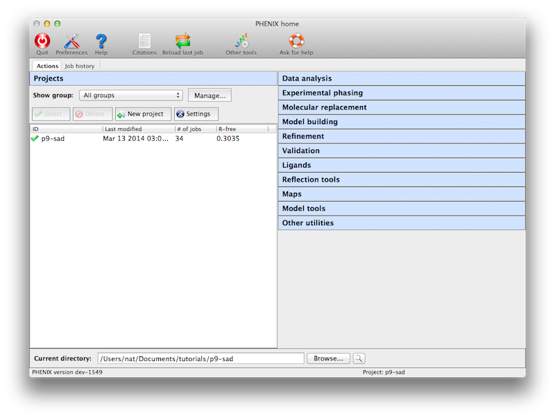
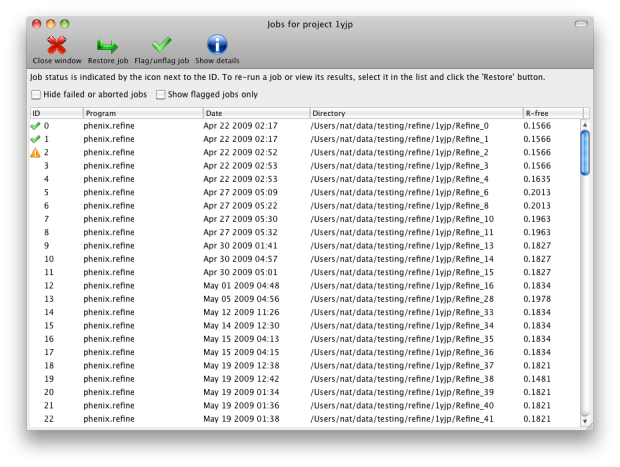
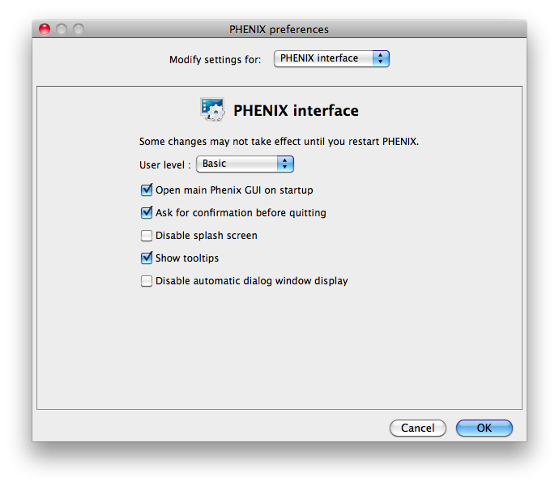
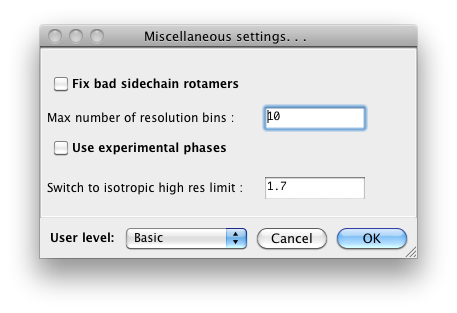
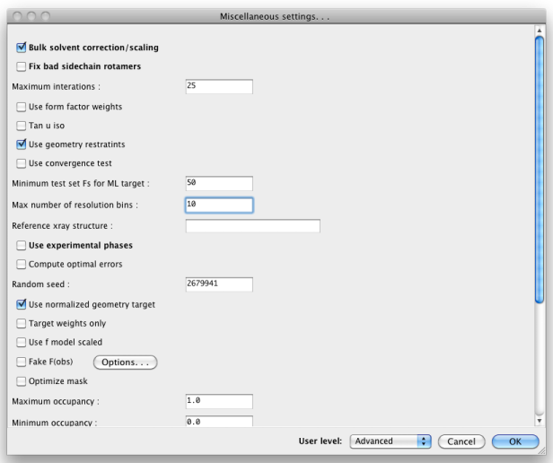
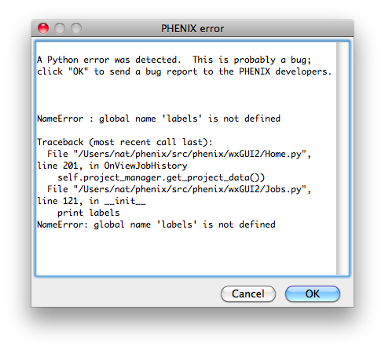

The phenix graphical interface
The Phenix GUI is primarily a frontend to the command-line programs, with
several extra graphical utilities for validation, map generation, and file
manipulations. The original GUI is still available but deprecated, and all
functionality has been more or less superseded. This page covers the main
interface and common behavior; individual program GUIs are covered separately.
The GUI runs on all supported operating systems but with some limitations on
specific platforms, in particular Microsoft Windows.
The main GUI is started simply by typing the command phenix; by default,
it will also open automatically when you launch any of the individual
program GUIs. You should not run more than one instance of the GUI at a
time, to avoid conflicts with internal database files.

You can use the Phenix chatbot
to get help on using any Phenix program in the GUI.
Just ask it any question about using Phenix. You can access the
chatbot with the Chat button on the toolbar in the GUI.
When starting a job, Phenix writes out a configuration file and calls the
command-line version of the program. The method of execution varies
depending on operating system. On Linux and Windows, By default the job
is started directly in
the main process, i.e. "locally", which allows communication between the
program and the GUI in memory rather than via temporary files. The drawback
to this is that if the GUI is closed or crashes, the job will be ended too.
An alternate "detached" mode is available (and used as default on Mac),
which starts the job as an entirely
separate process. This limits the speed at which the GUI can be updated,
but allows quitting the GUI without stopping the job.
A third mode, available only to Linux users,
is to run jobs on a queueing system; while this could be done
entirely on a multi-core workstation, it will usually be spread across a
cluster of similar computers. Currently Sun Grid Engine, PBS, LSF, and
Condor are supported to varying degrees.
To enable queued jobs, open the Preferences, switch to the "Processes"
tab, and check the box to enable queueing. The queue submission option will
now appear when starting a job. For this to work, the queue job
management binaries (for instance, 'qsub',
'qstat', and 'qdel' in SGE) must be in the current environment $PATH, Phenix
must be installed in the same location on all nodes, and the filesystem on
which the job is being run must be mounted on all nodes. The GUI will display
a "waiting" status until the job is actually started. The main interface
has a window for viewing the current queue status (Utilities->Show queue
status).
Individual programs are grouped by category. Except where noted, most of
these correspond to command-line programs, and the documentation for the
command-line version should be the primary reference for understanding
program behavior and inputs. Additional GUI documentation is available
for some programs.
- Overview: Overview of AlphaFold and predicted models in Phenix, with links to video tutorials.
- PredictAndBuild: How to solve an X-ray or cryo-EM structure using AlphaFold models.
- PredictModel: How to predict a structure with AlphaFold using the Phenix server through the Phenix GUI.
- ProcessPredictedModel: How to process a predicted model and obtain just the high-confidence parts, split into domains.
- Xtriage: comprehensive reflection data analysis and
quality assessment; used to detect twinning and other pathologies. Also
used internally in the AutoSol and AutoBuild wizards.
- Calculate merging statistics: calculate R-sym,
R-meas, mean I/sigma, CC1/2, and related statistics starting from scaled,
unmerged intensities.
- Analyze anomalous signal in a SAD experiment
- Scale unmerged anomalous data or multiple datasets
- Reflection file editor: utility for
merging reflection files and creating or extending R-free flags. (GUI only)
- Import CIF structure factors: convert a CIF file (used
by the PDB to store deposited experimental data) to an MTZ file. This will
automatically fetch data for a known ID from the PDB, or you may supply
your own files.
- French & Wilson data correction: procedure for estimating appropriate
values for weak and negative intensities. This is also run automatically
as part of several programs, including phenix.refine and the Phaser GUIs.
- 3D and 2D data viewers: these display data from
reflection files (usually
amplitudes or intensities) as they appear in reciprocal space, either in
a full 3D view or a pseudo-precession camera section.
- Comprehensive validation: based on the MolProbity
server (and sharing much of the
same code), with added analysis of experimental data. Reports R-work and
R-free, statistics for
geometry restraints, Ramachandran plot, sidechain rotamers, C-beta
deviation, all-atom contacts, and real-space correlation with electron
density. Outlier lists are linked to graphics programs such as Coot,
and clicking a residue or atom will zoom in on that site in the graphics
window. Coot will also display clashes detected by PROBE.
- Structure comparison: a tool for evaluating
assorted model features and validation criteria for multiple related
structures, and highlighting regions of difference. Automatically
superposes model and maps into a common frame of reference for viewing in
Coot or PyMOL.
- Comparison of unmerged data quality with refined model, as described in Karplus & Diederichs (2012). Phenix.cc_star.
- EMRinger: Model validation for de novo electron microscopy structures
- Map and model-map correlations and offsets: Map-map and map-model correlation allowing optional translational offsets
- POLYGON: graphical comparison of user-selected
model statistics with similar structures in the PDB.
- AutoSol: automated experimental phasing for all
experiment types (SAD, MAD, MIR, etc.); also performs simple model-building
after phasing. Combines HySS, Phaser, SOLVE, RESOLVE, and phenix.refine.
- Hybrid substructure search: heavy-atom site identification
program. Used automatically as part of AutoSol.
- Phaser-EP: Another Phaser interface, for SAD and MR-SAD
phasing. We recommend trying AutoSol first, but this GUI exposes
additional parameters.
- Plan a SAD experiment: Estimate required
data quality
for successful SAD phasing given experimental parameters
- MRage: automated molecular replacement using Phaser;
- Phaser-MR: Interface for molecular replacement using
standalone Phaser, with all parameters available as well
as different modes of operation. We recommend starting with MRage
first, but this GUI is useful for tough cases.
- MR-Rosetta: automation pipeline for exceptionally
difficult structures, which uses the
Rosetta software for protein structure
prediction and design to rebuild poor MR solutions, along with Phaser and
AutoBuild. (Separate installation of Rosetta is required.)
- Sculptor: prepare a search model for molecular
replacement by trimming the structure, modifying B-factors, etc.
- Sculptor - Coot interface: a Coot plugin for running Sculptor interactively
and visualizing results.
- Ensembler: tool for creating superimposed ensembles
of related MR search models.
- Create map coefficients: simple GUI for generating
likelihood-weighted maps, including 2mFo-DFc, mFo-DFc, anomalous, and
others, including averaged "kick" maps. Currently works only on untwinned
data. (GUI only)
- Generate composite omit maps: Tool for creating a
composite omit map.
- Isomorphous difference map: simple utility for creating a map from two
sets of amplitudes. Corresponds to the command-line program
phenix.fobs_minus_fobs_map.
- Cut out density: extracts a section of electron
density from input map coefficients, and outputs new map coefficients
(suitable for running molecular replacement in Phaser).
- Superpose maps: given two PDB files and
accompanying map coefficients
(in MTZ format), superposes the PDB files and reorients the maps to
follow them. Output is the reoriented PDB files and maps in CCP4 format.
- Map sigma level comparison: Calculate equivalent sigma levels when
visually comparing two maps
- Find difference map peaks and holes: Identify local maxima and minima in mFo-DFc map
(and anomalous map if available) and flag waters with excess density
- Model-based phases: calculate phases and
structure factors in a variety of formats (including Hendrickson-Lattman
coefficients).
- Create a map from map coefficients: convert an
MTZ file containing
map coefficients to one or more CCP4 or XPLOR-format maps suitable for
viewing in PyMOL, etc. (Note that the main maps GUI and many other
programs can also output these files, and the GUI will generate them for
you as necessary for PyMOL.)
- Optimize a map by sharpening: Automatic or manual map sharpening/blurring.
- Calculate F(model): utility for generating structure
factors (as real or complex numbers) from a model alone.
- Calculate Polder maps: compute omit map excluding bulk solvent <polder.html>`_
- RESOLVE density modification: This is just a
simplified interface for running the AutoBuild wizard in
map-only mode.
- Solvent flipping density modification: Simple density modification by solvent flipping
- Multi-crystal averaging: performs density
modification on different crystal forms of the same structure and averages
the maps around the models.
- Maximum entropy map: Statistical map modification procedure to remove artifacts
due to missing data
- Feature Enhanced Map (FEM): Calculate a 2mFo-DFc map
locally scaled and
density-modified to enhance fine details
- PredictAndBuild: Solve an X-ray structure using AlphaFold models.
- AutoBuild: automated model-building and refinement
with RESOLVE and phenix.refine. This GUI only encapsulates the building
functions; a separate GUI is available for omit-map calculations.
- Phase and build: similar to AutoBuild, but
significantly faster (although less accurate).
- Find Helices and Strands: fast building of
secondary structure (as poly-ALA) into maps with RESOLVE and PULCHRA.
Especially good for low-resolution data.
- Morph model: improvement of poor molecular replacement
solutions by "morphing" into density and rebuilding.
- Map to model: Model-building into cryo-EM and
low-resolution maps
- phenix.refine: automated refinement, supporting both
X-ray and neutron data. In addition to the features available in the
command-line program, the GUI version includes graphical atom selection,
simplified setup of restraints, automatic addition of hydrogens, and
post-refinement validation.
- phenix.real_space_refine: automated refinement
using a map and model (CCP4 format or MTZ format with map coefficients)
- DEN refinement: Deformable elastic network refinement
using simulated annealing, for low-resolution and molecular replacement structures
- Ensemble refinement: Time-averaged molecular
dynamics refinement - models disorder using a combination of multiple models and TLS
- Rosetta refinement: Hybrid Rosetta/Phenix refinement
for low-resolution X-ray crystal structures
- ReadySet: preparation of input files for refinement,
including generating restraints (CIF) files and adding hydrogens.
- AmberPrep: Utility for preparing files for refinement automatically generate the four
files needed for Phenix-Amber
- LigandFit: wizard for placing ligands in electron
density maps, accounting for necessary conformational changes.
- eLBOW: electronic Ligand Builder and Optimization
Workbench, a tool for generating restraints (and geometries) for any
molecule, using a variety of inputs including PDB file and SMILES string.
- Ligand pipeline: Automated molecular replacement,
refinement, and ligand placement for high-throughput crystallography
- REEL: "Restraints Editor Especially Ligands", a graphical
editor for CIF files, also serves as a frontend to eLBOW. Currently runs
as a separate program. (GUI only)
- Ligand search: program for identifying
unknown blobs of electron density and placing appropriate ligand(s).
- Guided ligand replacement: Ligand
fitting based on an existing protein-ligand complex
- Mtriage: Analyze quality of cryo-EM maps and models
- Local resolution: Calculate a local resolution map
- Map symmetry: Find map reconstruction symmetry
- Map box: Extract box of density with model or extract
unique part
- PredictAndBuild: Interpret a cryo-EM map using AlphaFold models.
- Dock in map: Dock a model into map
- Map to model: Model-building into cryo-EM maps
- Pathwalker: Chain tracing with cryo-EM maps
- Rebuild model: Rebuild a model, keeping connectivity
- Sequence from map: Determine a sequence from a map
- Fit Loops: Build missing loops into
a map based on a sequence and starting model
- Douse (Add waters): Add waters to cryo-EM models
- CryoFit: Flexibly fit a model to a cryo-EM map
- phenix.real_space_refine: automated refinement
using a map and model (CCP4 format or MTZ format with map coefficients)
- eLBOW: electronic Ligand Builder and Optimization
Workbench, a tool for generating restraints (and geometries) for any
molecule, using a variety of inputs including PDB file and SMILES string.
- Process predicted model: Replace B-factor
field in model and optionally split into domains
- Trim overlapping: Trim parts of a model
overlapping another model
- PDB Tools: various model manipulations such as
modifying atom records, geometry minimization, and generating "fake"
structure factors.
- PDB editor: graphical tool for editing PDB files
- Apply NCS: apply NCS operators to a PDB file
to generate the complete asymmetric unit. Note that a simpler NCS GUI
is also available as a plugin to the phenix.refine GUI, and does
not necessarily need to be run separately.
- Model Reconstruction: Get
asymmetric unit or biological unit with BIOMT or MTRX
- Geometry minimization: Regularize
geometry for a model (without data)
- Simple dynamics: Shake a model using
crude molecular dynamics
- Combine PDB files: simple utility for merging models split over several
PDB files (such as massive complexes like the ribosome). Chain IDs will
be modified if necessary (using up to two characters).
- Add conformations: Add alternate conformations in bulk, for an entire model
or user-defined atom selection
- Perturb model with normal mode analysis: Uses NMA in Phaser to generate
perturbed models along the direction of the normal modes
- Identify domains with normal mode analysis (SCEDS):
Uses NMA in Phaser to identify approximate rigid domains
- Sort heteroatom groups: Rearrange the
non-polymer heteroatom groups in a model to group with the nearest
macromolecule chain, similar to the protocol used by the PDB
- Prepare model for PDB deposition:
Finalize mmCIF files for deposition to the PDB
- Get PDB validation report:
Retrieve a validation report from the PDB
- Generate Table 1: utility for extracting
statistics from PDB, reflection, and log files required for publication.
- Find a Program: Search for a program or test
Like the CCP4 GUI (ccp4i), Phenix manages data and job history by grouping
into projects. You will be prompted to create a project the first time you
start the GUI. On subsequent launches Phenix will attempt to guess the
project based on the current directory. There are several constraints on
project management:
- Project IDs should be no more than 24 characters and contain only
alphanumeric characters (including underscore).
- Project directories may not be nested, i.e. you may not create a project
for a directory that is part of an existing project, or that has a
subdirectory that is owned by another project.
When a project is created Phenix will create a folder ".phenix" in the project
directory; this is used to store job history, temporary files, and other
internal data. Users should not need to modify this folder unless deleting
the project. All functions related to project management are available
from the main GUI only, either in the toolbar or the File menu.
The current version of the
GUI has limited functionality for configuring projects. Several options
are available for setting the behavior of phenix.refine, such as
default parameter files. The GUI will give you the opportunity to create
these files automatically, but this feature is optional. The other primary
function of the projects is storing job history; although this feature is
still in development, it will save basic statistics and configuration files,
and can restore the parameters and results of any successful previous run.

You may switch between projects while a GUI program is running; however, each
program window stays associated with the project it was opened with.
A unified interface for making atom selections. More details can be found on
this page.
A number of examples using published structures are included in the PHENIX
installation, and can be automatically loaded into the GUI as new projects.
To load tutorial data, click on "New project" in the main GUI; this window
also appears the first time the PHENIX GUI is started (before any projects
have been created). The button "Set up tutorial data" will open a new dialog
with a list of examples, grouped by the methods they are intended to
demonstrate.

For live demonstration, we normally use the P. aerophilum translation
initiation-factor 5a or p9-sad example for experimental phasing,
TEM-1 Beta-lactamase/beta-lactamase inhibitor complex (beta-blip) for
molecular replacement, S. aureofaciens ribonuclease Sa (rnase-s) for
refinement, and N-ethylmaleimide sensitive factor + ATP (nsf-d2-ligand)
for ligand fitting. All of these datasets run relatively quickly (5-30
minutes) in the intended programs. (These examples are also used extensively
in this documentation.)
Some of the behavior of the GUI can be customized via the Preferences dialog,
which is available from the File menu (Linux) or Phenix menu (Mac) and on the
toolbar of most programs.

Because some of the larger programs may have up to 500 distinct parameters,
many of which rarely need changing, advanced settings are hidden by default.
You may control this in individual dialogs using the "User level" menu at
the bottom of the window, or change the global level in the "PHENIX interface"
pane (shown above), in the "User level" option. For example, in
phenix.refine, a typical configuration dialog will look like this when the
user level is "Basic":

When set to "Advanced", many more options will appear:

Other Preferences settings determine what external programs are used for
various file types, interactions with molecular graphics programs (Coot,
PyMOL, and the simple built-in graphics), and options for some of the
specific modules in Phenix.
Coot is an open-source (GPL) model-building
program written by Paul Emsley. Although we do not distribute it with
Phenix, it is available as source and binaries for Linux (from the developer's
page), and third-party Mac binaries are available (provided by Bill Scott).
Documentation on how to use it with Phenix is here. Phenix
will try to locate Coot on your system automatically, but if it is not found,
you may specify the command to use under Preferences->Graphics->Full path to
Coot.
PyMOL is an open-source molecular viewer written by
Warren DeLano. We distribute an older precompiled version (0.99) with Phenix;
however, we recommend installing the latest version and add the command
under Preferences->Graphics->Full path to PyMOL. More information is
in the separate PyMOL instructions.
Bugs in the code may result in a pop-up window containing a detailed error
message. Clicking "OK" will send an email to the Phenix developers with
this information. We strongly encourage users to submit these reports, as
they are one of the primary mechanisms by which we identify coding errors.
The report will include the error message, information about the host
system, and user name/email; no other personally identifying information or
data is sent.

The PHENIX GUI is written in Python 2.7, using the wxPython toolkit for
most features, plus matplotlib for plotting.
Some of the icons used in the GUI came from the Crystal Icons project
by Everaldo Coelho which is licensed under the LGPL. Many
additional icons (anything with a molecular representation) were generated
using PyMOL.
Several open-source programs have been included with PHENIX and
are used in various ways in the GUI; we are grateful to their authors for
permission to redistribute the code:
- **MUSCLE** written by Bob Edgar.
Edgar, R.C. (2004) MUSCLE: multiple sequence alignment with high accuracy
and high throughput.Nucleic Acids Res. 32(5):1792-1797.
- **ksDSSP** written by UCSF Computer Graphics Laboratory. Original method
(independently reimplemented): W. Kabsch and C. Sander, "Dictionary of
Protein Secondary Structure: Pattern Recognition of Hydrogen-Bonded and
Geometrical Features" Biopolymers 22:2577 (1983).
- PULCHRA (Rotkiewicz & Skolnick 2008)
- Graphical tools for macromolecular crystallography in PHENIX. N. Echols, R.W. Grosse-Kunstleve, P.V. Afonine, G. Bunkóczi, V.B. Chen, J.J. Headd, A.J. McCoy, N.W. Moriarty, R.J. Read, D.C. Richardson, J.S. Richardson, T.C. Terwilliger, and P.D. Adams. J. Appl. Cryst. 45, 581-586 (2012).
- Fast procedure for reconstruction of full-atom protein models from reduced representations. P. Rotkiewicz, and J. Skolnick. J Comput Chem 29, 1460-5 (2008).